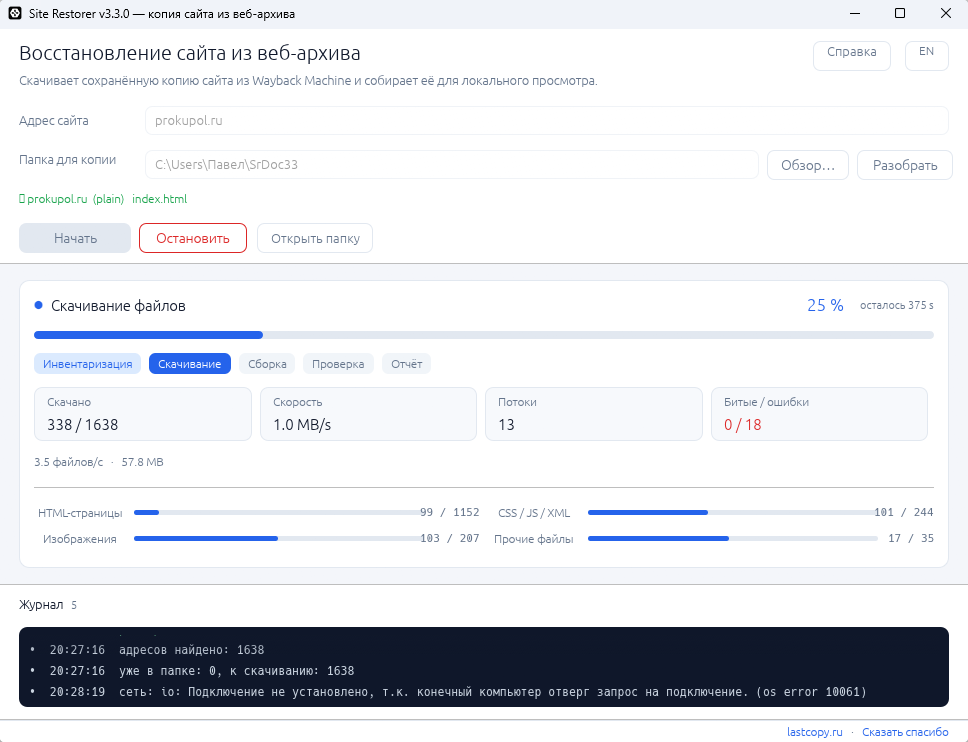

Инвентаризация архива
CDX-индекс Internet Archive: все сохранённые адреса домена. Постраничный обход для больших сайтов, до 50 000 URL за прогон.
Windows 10/11 · MIT · без установки
Site Restorer достаёт сохранённую версию сайта из Internet Archive, собирает её в локальную копию и честно показывает, что удалось вернуть, а что потеряно.
Python не нужен Портативный exe Любая CMS

Контекст
В ночь с 1 на 2 ноября 2026 года хостинг Beget пережил атаку на управляющий контур инфраструктуры. Провайдер подтвердил потерю содержимого виртуальных серверов, объектного хранилища S3 и кластеров Kubernetes; резервные копии VPS также оказались утрачены.
Сайт, с которого начался этот проект, размещался там же: домен резолвился, сервер не отвечал, собственных бэкапов не осталось. Единственным источником контента был веб-архив — 1 638 адресов и 9 476 снимков за десять лет.
Возможности
Программа делает четыре вещи: узнаёт, что сохранил архив, скачивает это, собирает в оффлайн-копию и проверяет результат.
CDX-индекс Internet Archive: все сохранённые адреса домена. Постраничный обход для больших сайтов, до 50 000 URL за прогон.
HTML, стили, скрипты и изображения качаются одновременно. Конкурентность подстраивается: 2 → 24 потока по AIMD, срез при ошибках 429.
Уже скачанное не запрашивается повторно. Прерванный прогон продолжается с места остановки, а лимиты архива обрабатываются паузами, а не ошибками.
Ссылки переписываются в относительные. Кэш CMS с хэшем в имени и миниатюры обрабатываются эвристиками — стили и картинки не отваливаются.
Обход готовых страниц, подсчёт внутренних и битых ссылок, report.html: покрытие по типам файлов, объём копии, список ошибок.
Ссылка из письма, поиска или архива, русская раскладка, IDN-домены. Проверено на Bitrix, WordPress, MODX, Craft CMS и Laravel.
SiteRestorer-windows-x64.exe --cli --site example.com --out D:\mirrorsite\готовая копия, открывать локальным серверомmirror\сырые файлы из архиваdata\inventory.jsonl — список адресовreport.htmlотчёт о покрытииДля скриптов есть командная строка: --site, --out, --workers, --rate, --limit, --lang. Подробности — в README.
Как это работает
Домен, ссылку с utm-метками или адрес из архива. Программа очистит ввод сама, включая русскую раскладку и IDN.
По умолчанию Документы\SiteRestore\site. Можно указать любой диск и каталог.
Загрузка идёт в фоне: прогресс по типам файлов, журнал запросов, кнопка «Остановить» в любой момент.
report.html показывает покрытие, объём и битые ссылки. Копию открывают локальным сервером.
cd Документы\SiteRestore\site
python -m http.server 8080Почему нужен сервер. Копия — это обычные HTML-файлы, но ссылки вида /catalog/ браузер по двойному клику не откроет. Достаточно любого локального статического сервера; если установлен Python — хватит двух строк слева.
Кейс
Проект начался с этого сайта: каталог товаров, блог и PDF-каталоги. Ни файлов, ни бэкапов, ни доступа к хостингу.
Подробный разбор с цифрами — в документации проекта.
Домен резолвится, сервер молчит, бэкапов нет. Архив — единственный источник контента: страницы, статьи, каталог.
Нужна копия для истории, переезда или передачи клиенту — без доступа к админке и без старой CMS.
Сравнить, что было на сайте год назад, восстановить удалённый раздел или потерянную страницу.
Границы
Инструмент не обещает чудес: он аккуратно вытаскивает то, что архив действительно сохранил.
Если краулер Internet Archive ни разу не забирал файл, его нет ни в одном снимке. Программа покажет это в отчёте, а не подставит заглушку.
Копия — это страницы и файлы. Формы, вход, корзина, поиск и AJAX работать не будут: восстанавливается контент и структура.
Internet Archive ограничивает частоту запросов с одного IP. Большие сайты качаются часами — это нормально, докачка спасает.
Скачать
Ссылки ведут на последнюю сборку в GitHub Releases. Это один самодостаточный бинарник: ни интерпретатора, ни библиотек доустанавливать не нужно.
Unblock.cmd из архива). Исходный код и CI-сборка открыты — можно собрать самому.
Python-версия (12,6 МБ) и порт на Go (7,9–8,3 МБ) остаются в репозитории как архив: в релизах 3.x они не собираются. Матрица размеров и команды сборки — в BUILD.md.
Все версии, контрольные суммы и история изменений — на странице Releases.
Проект развивается без рекламы, подписок и телеметрии. Если Site Restorer вернул вам сайт или сэкономил ночь — можно отблагодарить автора на Boosty. Это лучший способ ускорить новые версии.
Вопросы
python -m http.server — но подойдёт и любой другой статический сервер.www и без), а также соседние годы: для каждого адреса перебираются ближайшие снимки.Разборы
Два практических материала для тех, кто разбирается в теме и ищет порядок действий.
CDX-индекс, режим id_, сборка копии, кодировки, проверка ссылок и чек-лист.
Что заморозить, где искать бэкапы, как спасти домен и почту и не потерять трафик.